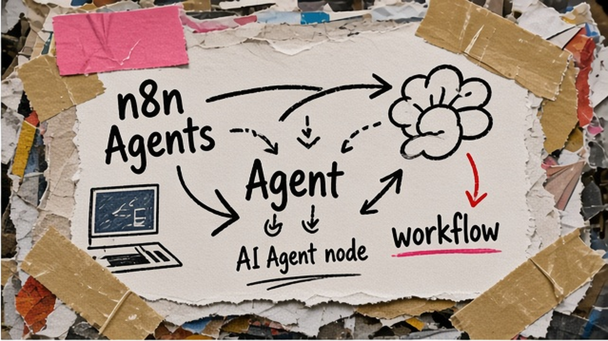
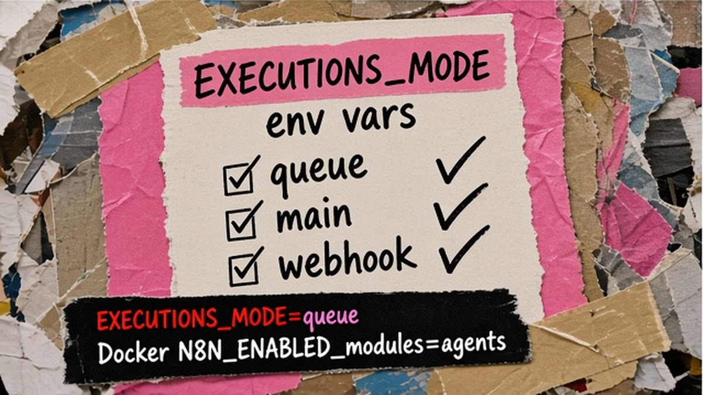
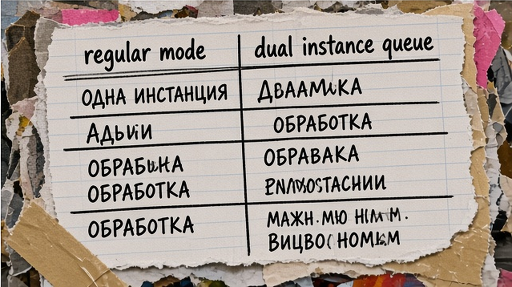

Вы подняли n8n на своём сервере, включили queue mode для тяжёлых workflow, а вкладка Agents не появляется или Telegram-бот молчит. Запрос "n8n агенты на своем сервере" часто ведёт в гайды про узел AI Agent на canvas, а не про продукт Agents с publish и каналами. Ниже – чек-лист env, Docker и схема двух инстансов: вы проверите версию и режим, включите модуль agents в regular mode, настроите публичный webhook URL, опубликуете агента и прогоните smoke-тест Slack или Telegram.
TL;DR / Быстрый инсайт: n8n Agents (вкладка Agents, сентябрь 2026) – отдельный продукт с publish, каналами и расписанием; это не тот же AI Agent node в workflow. Self-hosted: версия n8n ≥2.32.3, в env минимум N8N_ENABLED_MODULES=agents, режим regular (queue mode для Agents официально не поддерживается). Production-паттерн: queue-инстанс для воркфлоу + второй контейнер без EXECUTIONS_MODE=queue для Agents. Для Telegram и Slack нужен публичный N8N_WEBHOOK_URL за reverse proxy.
Self-hosted – n8n на вашем Docker/VPS; queue mode гонит тяжёлые workflow в Redis и workers, чтобы главный процесс не падал под нагрузкой. Agents в Preview: один turn диалога = one execution в дашборде. Новая установка – в гайде по Docker на VPS (slug ustanovka-n8n-docker-vps); здесь – Agents к уже работающему продакшену. Показы "n8n агенты" в research B02 ~699/мес (не перепроверено Вордстатом 06.10.2026).

Workflow – canvas с триггером. AI Agent node – агент внутри одного сценария. n8n Agents – вкладка Agents: publish, каналы, cron, вызов через Message an Agent.
| Критерий | n8n Agents (продукт) | AI Agent node | Обычный workflow |
|---|---|---|---|
| Где живёт | Вкладка Agents, Settings > Agents | Нода на canvas | Canvas workflows |
| Publish и каналы | Да, внешние мессенджеры | Нет, только через триггеры workflow | Webhook, cron, интеграции |
| Env на self-host | N8N_ENABLED_MODULES=agents, regular mode | Достаточно версии n8n с AI | Queue mode OK |
| Когда выбирать | Автономный бот с approvals | Агент внутри одного процесса | Классическая автоматизация |
Делайте: перед правкой docker-compose убедитесь, что вам нужен именно продукт Agents, а не только node из гайда по AI Agent node. Не делайте: включать agents в N8N_ENABLED_MODULES, если достаточно одного workflow-бота – лишний модуль расширяет поверхность атаки.

Делайте: снимите копию compose и .env в git-private или vault до рестарта. Не делайте: менять queue production в пятницу вечером без второго инстанса под Agents.

Docs n8n: queue mode ≠ Agents. Не ломайте queue – добавьте второй инстанс.
Схема dual instance:
Инстанс A (production workflows): EXECUTIONS_MODE=queue → Redis → workers → Postgres
Инстанс B (Agents only): без EXECUTIONS_MODE=queue (regular) → N8N_ENABLED_MODULES=agents → тот же Postgres или отдельная БД → N8N_WEBHOOK_URL на отдельном поддомене
Workflow на A может вызывать опубликованного агента на B через Message an Agent node
На малом VPS можно временно весь n8n в regular – проще, без workers. Делайте: hostname agents.example.com. Не делайте: Agents "на queue".
Минимум env: agents в N8N_ENABLED_MODULES; instance-ai опционален для builder в UI.
Пример environment в docker-compose:N8N_ENABLED_MODULES: "agents"
N8N_WEBHOOK_URL: "https://agents.example.com/"
N8N_PROXY_HOPS: "1"
Опционально knowledge base (Preview, sandbox): N8N_AGENTS_AI_SANDBOX_ENABLED, N8N_AGENTS_AI_SANDBOX_PROVIDER=daytona
За proxy – N8N_WEBHOOK_URL. После docker compose up -d: Settings > Agents → Enable. Делайте: env в .env и compose синхронно. Не делайте: ключи LLM в Git.
KB без Daytona – агент без полной KB (Preview). UI и каналы подробнее – в материале «настройка n8n Agents 2026» (slug nastroyka-n8n-agents-2026). Делайте: Message an Agent smoke. Не делайте: shared credentials без audit.
| Симптом | Вероятная причина | Действие |
|---|---|---|
| Нет вкладки Agents | Версия <2.32.3 или модуль не включён | Обновить n8n; N8N_ENABLED_MODULES=agents; Enable в Settings |
| Telegram не отвечает | Queue mode или неверный webhook URL | Инстанс regular; проверить N8N_WEBHOOK_URL и proxy hops |
| Канал 404 / SSL | Reverse proxy режет путь /webhook | Сверить docs configure-webhook-urls-with-reverse-proxy |
| Агент "галлюцинирует" tools | Слишком много tools без approve | Сократить tools; включить approvals на write |
Чек-лист перед продакшеном (15 пунктов):
Workflow для команды: inventory → disambiguation → топология → env/Docker → publish → smoke → hardening. Если параллельно строите no-code без Docker, на курсе Make.com и вайбкодинга разбираем похожие AI-сценарии без self-host DevOps.
Профиль автора и практика внедрения: Артур Хорошев. Обсуждение self-host и автоматизации – Telegram Ковчег, если тема релевантна вашему стеку.
Материал проверен: эксперт Артур Хорошев (CEO Maya AI, практик n8n, Make.com и AI-агентов).
Достоверность данных: версии n8n, env-переменные и ограничение queue mode сверены с docs.n8n.io на 06.10.2026; показатели Вордстат ("n8n", "n8n агенты") приведены по research B02 (июнь 2026), без повторной выгрузки MCP 06.10.2026.
Нет. В официальной документации указано, что Agents не работают в queue mode на том же инстансе; держите Agents на regular mode или поднимите второй контейнер без EXECUTIONS_MODE=queue и перенесите туда модуль agents.
Минимум строка agents. Если нужен AI-assisted builder в UI – instance-ai,agents. Чтобы временно отключить продукт после инцидента – уберите agents из env и перезапустите контейнер или выключите Agents в Settings.
На одном процессе n8n в queue mode – нет. На одной машине – да: два compose-проекта (queue + regular), разные порты и N8N_WEBHOOK_URL, общая или раздельная Postgres по вашей политике.
Да, внешним каналам нужен публичный HTTPS URL. За reverse proxy задайте N8N_WEBHOOK_URL и N8N_PROXY_HOPS=1; сверьте путь webhook с примером configure-webhook-urls-with-reverse-proxy в docs n8n.
Agents – отдельный продукт с publish, sessions и каналами; node – один шаг внутри workflow. Для Slack-бота с approvals берите Agents; для агента только внутри одного сценария часто хватает node из canvas.
Community Edition не продаёт executions отдельно: платите VPS, Redis (для queue-инстанса), Postgres и токены LLM API. В учёте n8n один turn пользователя = one execution вместе с workflow runs – заложите это в мониторинг.